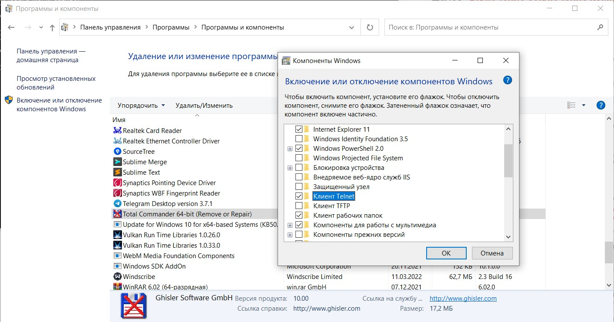
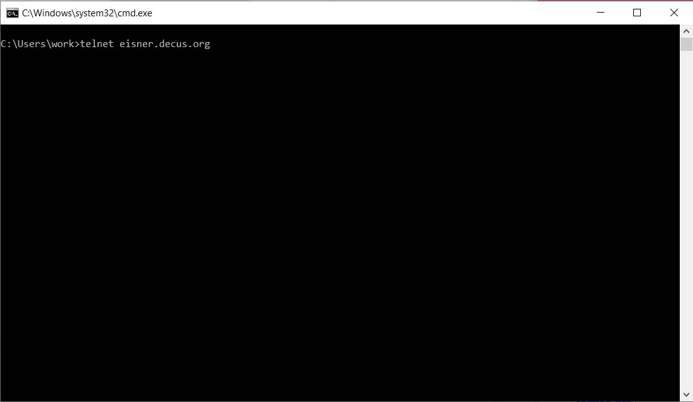
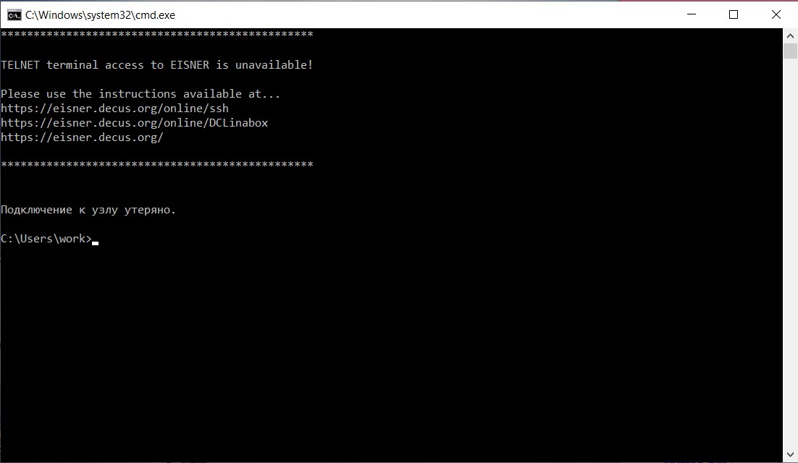

Изучение и анализ протоколов канального и сетевого уровня с помощью диагностических утилит операционной системы Windows и программных средств, позволяющих контролировать сетевой трафик на примере программы Network Monitor.
Telnet - сетевой протокол, позволяющий клиенту соединиться с другой машиной в сети и отправлять команды удалённым системам через терминал. Соединения обычно находятся на 23 порте. Telnet применяется другими протоколами, например FTP. Telnet предоставляет пользователям интерактивную и двунаправленную текстовую систему сообщений, которая использует эффективное терминальное соединение, которое имеет длину более 8 байт. Пользовательские данные разбросаны по всей полосе с информацией управления telnet над TCP. Это помогает выполнять некоторые функции удаленно.
Подключение Telnet практически не используется, на замену ему прошёл SSH (Secure Shell) - протокол, разрешающий соединение с удалённое машиной (порт 22). В отличие от Telnet, SSH надёжно шифрует данные, что гарантирует безопасность их передачи.
Служба Telnet - предназначена для эмуляции удаленного терминала.
С помощью Telnet можно обратиться к любому порту и посмотреть, что он отвечает (с некоторыми (например, с ftp) даже пообщаться).
Взаимодействие клиента и сервера происходит по схеме, представленной на рисунке ниже.
Telnet используется для получения доступа к командной строке удалённой машины, например для запуска и остановки служб или управления файлами. Чтобы разрешить работу с telnet, необходимо зайти в директорию Панель управления -> Программы -> Программы и компоненты -> Компоненты Windows и поставить галочку напротив «Клиент Telnet».
Наиболее часто используемые параметры:
| c | - close | закрыть текущее подключение |
| d | - display | отобразить параметры операции |
| o | - open имя_узла [Порт] | подключиться к сайту (по умолчанию, Порт = 23) |
| q | - quit | выйти из telnet |
| set | - set | установить параметры ("set ?" для вывода их списка) |
| sen | - send | отправить строки на сервер |
| st | - status | вывести сведения о текущем состоянии |
| u | - unset | сбросить параметры ("unset ?" для вывода их списка) |
| ?/h | - help | вывести справку |
Пример использования утилиты для подключения к удалённому серверу:
Результат подключения:
Создать и настроить Capture в программе Network Monitor. Как это сделать, написано в теоретическом материале.
Список удалённых серверов для подключения можно найти на официальном сайте Telnet.